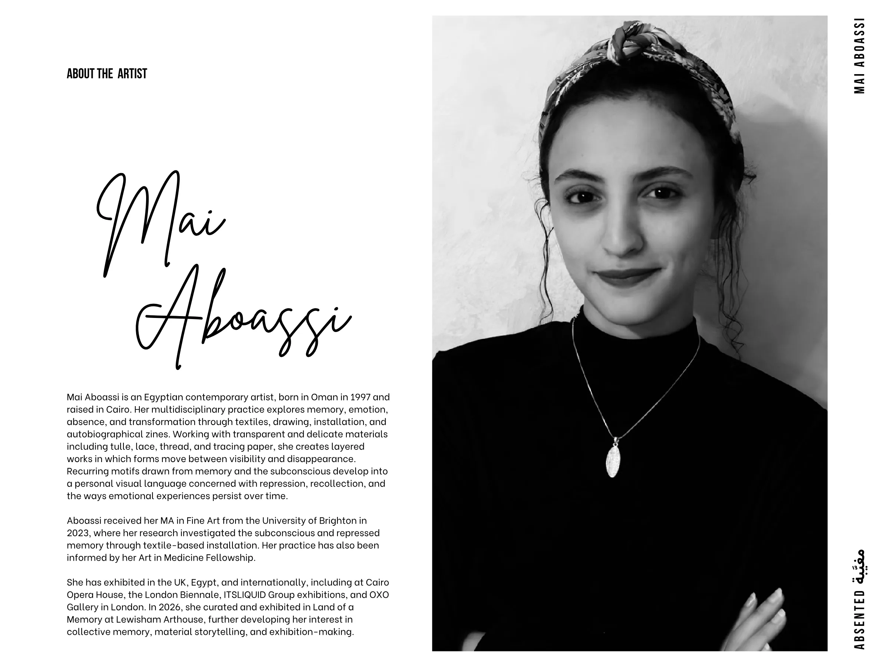

Mai
Aboassi
Mai Aboassi is an Egyptian contemporary artist, born in Oman in 1997 and raised in Cairo. Her multidisciplinary practice explores memory, emotion, absence, and transformation through textiles, drawing, installation, and autobiographical zines. Working with transparent and delicate materials including tulle, lace, thread, and tracing paper, she creates layered works in which forms move between visibility and disappearance.
Recurring motifs drawn from memory and the subconscious develop into a personal visual language concerned with repression, recollection, and the ways emotional experiences persist over time.
Aboassi received her MA in Fine Art from the University of Brighton in 2023, where her research investigated the subconscious and repressed memory through textile-based installation. Her practice has also been informed by her Art in Medicine Fellowship.
She has exhibited in the UK, Egypt, and internationally, including at Cairo Opera House, the London Biennale, ITSLIQUID Group exhibitions, and OXO Gallery in London. In 2026, she curated and exhibited in Land of a Memory at Lewisham Arthouse, further developing her interest in collective memory, material storytelling, and exhibition-making.
ABSENTED Mai Aboassi
ABOUT THE ARTIST
